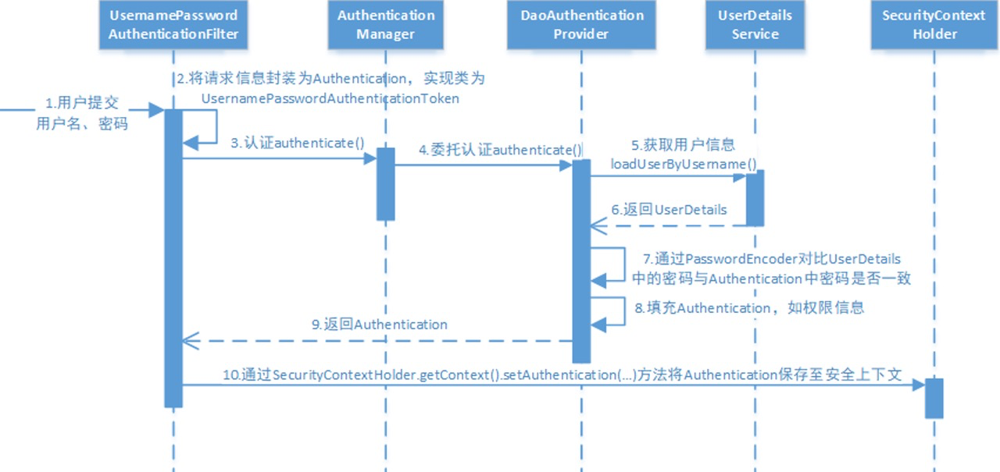
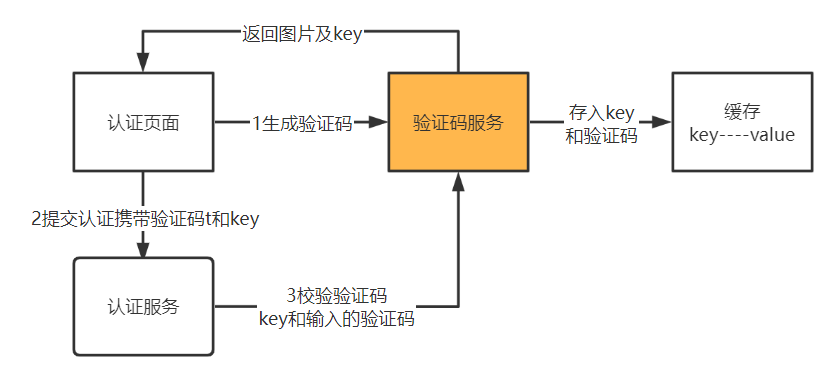

认证和授权¶
认证¶
认证即用户访问系统资源时系统要求验证用户的身份信息。
- 认证通过，由认证服务向给用户颁发令牌，用户拿着令牌去访问系统的资源。
- 未认证则需要去登录。
授权¶
用户认证通过后去访问系统的资源，系统会判断用户是否拥有访问资源的权限。
单点登录¶
项目基于微服务架构构建，微服务包括：内容管理服务、媒资管理服务、学习中心服务、系统管理服务等，用户只需要认证一次便可以在多个拥有访问权限的系统中访问，这个功能叫做单点登录。
单点登录（Single Sign On），简称SSO。SSO的定义是在多个应用系统中，用户只需要登录一次就可以访问所有相互信任的应用系统。
Spring Security¶
认证功能几乎是每个项目都具备的功能，它与业务无关。市面上有很多认证框架，如：Apache Shiro、CAS、Spring Security等。
Spring Security是spring家族的一份子，且和Spring Cloud集成的很好。
Spring Security它是一个专注于为 Java 应用程序提供身份验证和访问控制（授权）的框架。
项目主页：https://spring.io/projects/spring-security
Spring cloud Security： https://spring.io/projects/spring-cloud-security
Spring Security所解决的问题就是安全访问控制。
对所有进入系统的请求进行拦截，校验每个请求是否能够访问它所期望的资源。
Filter¶
Spring Security对Web资源的保护是靠一系列Filter过滤器链实现的。
初始化Spring Security时，会创建一个名为SpringSecurityFilterChain的Servlet过滤器，类型为org.springframework.security.web.FilterChainProxy，它实现了javax.servlet.Filter，因此外部的请求会经过此类。
上面的FilterChainProxy是一个代理，真正起作用的是FilterChainProxy中SecurityFilterChain所包含的各个Filter，同时这些Filter作为Bean被Spring管理，它们是Spring Security核心，各有各的职责，但他们并不直接处理用户的认证和授权，而是把它们交给了认证管理器AuthenticationManager和决策管理器AccessDecisionManager进行处理。

过滤器链中主要的几个过滤器及其作用：
- SecurityContextPersistenceFilter：整个拦截过程的入口和出口（也就是第一个和最后一个拦截器）
- 请求开始时，从配置好的
SecurityContextRepository中获取SecurityContext，然后把它设置给SecurityContextHolder。 -
请求完成后，将
SecurityContextHolder持有的SecurityContext再保存到配置好的SecurityContextRepository，同时清除securityContextHolder所持有的SecurityContext。 -
UsernamePasswordAuthenticationFilter：用于处理来自表单提交的认证。
- 该表单必须提供对应的用户名和密码。
-
其内部还有登录成功或失败后进行处理的
AuthenticationSuccessHandler和AuthenticationFailureHandler，这些都可以根据需求做相关改变。 -
FilterSecurityInterceptor：是用于保护web资源的，使用
AccessDecisionManager对当前用户进行授权访问。 - ExceptionTranslationFilter：能够捕获来自 FilterChain 所有的异常，并进行处理。但是它只会处理两类异常：
AuthenticationException和AccessDeniedException，其它的异常它会继续抛出。
执行流程¶

- 用户提交用户名、密码被
SecurityFilterChain中的UsernamePasswordAuthenticationFilter过滤器获取到，封装为请求Authentication，通常情况下是UsernamePasswordAuthenticationToken这个实现类。 - 过滤器将Authentication提交至认证管理器
AuthenticationManager进行认证。 - 认证成功后，
AuthenticationManager身份管理器返回一个被填充满了信息的（包括权限信息，身份信息，细节信息，但密码通常会被移除）Authentication实例。 SecurityContextHolder安全上下文容器将上面填充了信息的Authentication，通过SecurityContextHolder.getContext().setAuthentication(…)方法，设置到其中。
AuthenticationManager¶
AuthenticationManager接口（认证管理器）是认证相关的核心接口，也是发起认证的出发点，它的实现类为ProviderManager。
Spring Security支持多种认证方式，因此ProviderManager维护着一个List<AuthenticationProvider>列表，存放多种认证方式，最终的认证工作是由AuthenticationProvider完成的。
DaoAuthenticationProvider¶
web表单的对应的AuthenticationProvider实现类为DaoAuthenticationProvider，它的内部又维护着一个UserDetailsService负责UserDetails的获取。最终AuthenticationProvider将UserDetails填充至Authentication。
注册登录¶
整合Spring Security实现JWT资源访问的认证和权限控制，保护应用的资源API。
登录验证用户名和密码通过之后，生成jwt token返回给客户端，客户端之后的请求在请求头上面带上下发的JWT token，服务端使用JWT Filter验证请求访问头token，实现jwt跨域认证的效果。
引入依赖
<dependency>
<groupId>org.springframework.boot</groupId>
<artifactId>spring-boot-starter-security</artifactId>
<version>${spring.boot.version}</version>
<!-- 排除默认的日志-->
<exclusions>
<exclusion>
<groupId>org.springframework.boot</groupId>
<artifactId>spring-boot-starter-logging</artifactId>
</exclusion>
</exclusions>
</dependency>
<dependency>
<groupId>io.jsonwebtoken</groupId>
<artifactId>jjwt-api</artifactId>
<version>0.12.6</version>
</dependency>
<dependency>
<groupId>io.jsonwebtoken</groupId>
<artifactId>jjwt-impl</artifactId>
<version>0.12.6</version>
<scope>runtime</scope>
</dependency>
<dependency>
<groupId>io.jsonwebtoken</groupId>
<artifactId>jjwt-jackson</artifactId>
<version>0.12.6</version>
<scope>runtime</scope>
</dependency>
SecurityConfig¶
import jakarta.annotation.Resource;
import org.springframework.context.annotation.Bean;
import org.springframework.context.annotation.Configuration;
import org.springframework.security.authentication.AuthenticationManager;
import org.springframework.security.config.Customizer;
import org.springframework.security.config.annotation.authentication.configuration.AuthenticationConfiguration;
import org.springframework.security.config.annotation.web.builders.HttpSecurity;
import org.springframework.security.config.annotation.web.configuration.EnableWebSecurity;
import org.springframework.security.config.http.SessionCreationPolicy;
import org.springframework.security.crypto.bcrypt.BCryptPasswordEncoder;
import org.springframework.security.crypto.password.PasswordEncoder;
import org.springframework.security.web.SecurityFilterChain;
import org.springframework.security.web.authentication.UsernamePasswordAuthenticationFilter;
@Configuration
@EnableWebSecurity
public class SecurityConfig {
@Resource
private AuthEntryPoint authEntryPoint;
@Bean
public SecurityFilterChain securityFilterChain(HttpSecurity http) throws Exception {
http
.csrf(csrf -> csrf.disable()) // 新式 Lambda 配置
.exceptionHandling(exception -> exception
.authenticationEntryPoint(authEntryPoint) // 自定义认证入口点
)
.sessionManagement(session -> session
.sessionCreationPolicy(SessionCreationPolicy.STATELESS) // 因为jwt是无状态的，所以session管理策略改为无状态的
)
.authorizeHttpRequests(authorize -> authorize //放行相关端点
.requestMatchers(
// "/**",//临时全部打开
"/user/**",//登录注册
"/v2/api-docs",
"/configuration/ui",
"/configuration/security",
"/doc.html",
"/swagger-ui.html",
"/swagger-ui/**",
"/v3/api-docs/**",
"/swagger-resources/**",
"/webjars/**"
// 添加其他白名单路径
).permitAll() // 放行白名单
.anyRequest().authenticated() // 其他请求需认证
)
.httpBasic(Customizer.withDefaults()); // 替换旧的 httpBasic() 写法
.addFilterBefore(jwtAuthenticationFilter(), UsernamePasswordAuthenticationFilter.class); // 添加 JWT 过滤器
return http.build();
}
// 配置认证管理器，登录接口需要使用
@Bean
public AuthenticationManager authenticationManager
(AuthenticationConfiguration authenticationConfiguration) throws Exception {
return authenticationConfiguration.getAuthenticationManager();
}
//对用户密码进行加密
@Bean
public PasswordEncoder passwordEncoder() {
return new BCryptPasswordEncoder();
}
@Bean
public JWTAuthenticationFilter jwtAuthenticationFilter() {
return new JWTAuthenticationFilter();
}
}
认证结果¶
commence¶
没有权限时返回报错，而不是Spring Security默认的重定向登录页。需要添加登录异常的拦截处理类。
import com.alibaba.fastjson2.JSON;
import com.hhjava.www.model.dtos.ResponseResult;
import jakarta.servlet.http.HttpServletRequest;
import jakarta.servlet.http.HttpServletResponse;
import org.springframework.http.MediaType;
import org.springframework.security.core.AuthenticationException;
import org.springframework.security.web.AuthenticationEntryPoint;
import org.springframework.stereotype.Component;
import java.io.IOException;
@Component
public class AuthEntryPoint implements AuthenticationEntryPoint {
/**
* 当用户未通过身份验证时调用此方法。
*
* @param request HttpServletRequest 对象，包含请求信息。
* @param response HttpServletResponse 对象，用于发送响应。
* @param authException AuthenticationException 异常对象，包含认证失败的信息。
* @throws IOException 如果发生输入输出异常。
*/
@Override
public void commence(HttpServletRequest request, HttpServletResponse response, AuthenticationException authException) throws IOException {
response.setStatus(HttpServletResponse.SC_UNAUTHORIZED);
response.setContentType(MediaType.APPLICATION_JSON_VALUE);
response.getWriter().write(JSON.toJSONString(ResponseResult.errorResult(401, "未认证")));
}
}
onAuthenticationSuccess¶
import com.fasterxml.jackson.databind.ObjectMapper;
import com.hhjava.www.common.JwtUtil;
import jakarta.annotation.Resource;
import jakarta.servlet.http.HttpServletRequest;
import jakarta.servlet.http.HttpServletResponse;
import org.springframework.security.core.Authentication;
import org.springframework.security.web.authentication.AuthenticationSuccessHandler;
import org.springframework.stereotype.Component;
import java.io.IOException;
import java.util.HashMap;
import java.util.Map;
/**
* 创建一个自定义的登录成功处理器，在用户登录成功后生成并返回 JWT Token。
*/
@Component
public class CustomAuthenticationSuccessHandler implements AuthenticationSuccessHandler {
// 处理登录成功的逻辑
@Override
public void onAuthenticationSuccess(HttpServletRequest request, HttpServletResponse response, Authentication authentication) throws IOException {
// 生成 JWT Token
String token = JwtUtil.generateToken(authentication);
// 返回 Token
Map<String, String> result = new HashMap<>();
result.put("token", token);
response.setContentType("application/json;charset=UTF-8");
response.getWriter().write(new ObjectMapper().writeValueAsString(result));
}
}
UserDetailsService¶
Spring Security中的核心接口，用于提供用户的详细信息。Spring Security使用此接口来获取进行身份认证和授权的用户信息。
import jakarta.annotation.Resource;
import org.springframework.security.core.GrantedAuthority;
import org.springframework.security.core.authority.SimpleGrantedAuthority;
import org.springframework.security.core.userdetails.User;
import org.springframework.security.core.userdetails.UserDetails;
import org.springframework.security.core.userdetails.UserDetailsService;
import org.springframework.security.core.userdetails.UsernameNotFoundException;
import org.springframework.stereotype.Component;
import java.util.Collection;
import java.util.stream.Collectors;
@Component // 注入到容器中
public class CustomUserDetailsService implements UserDetailsService {
@Resource
private UserService userService;
@Override
public UserDetails loadUserByUsername(String username) throws UsernameNotFoundException {
UserDto user = userService.getUserByUsername(username);
if (user == null) {
// return null;
// 如果用户不存在，抛出异常
throw new UsernameNotFoundException("User not found with username: " + username);
}
// 返回包含用户信息和权限的 UserDetails 对象
// import org.springframework.security.core.userdetails.User;
return new User(user.getUsername(), user.getPassword(), getAuthorities(user));
}
//import org.springframework.security.core.GrantedAuthority;
private Collection<? extends GrantedAuthority> getAuthorities(UserDto user) {
return user.getRoles()
.stream()
.map(role -> new SimpleGrantedAuthority(role.getName()))
.collect(Collectors.toList());
}
}
过滤器认证¶
OncePerRequestsFilter
- 职责：
- 在 每个 HTTP 请求 中检查请求头中的
JWT令牌。 - 验证令牌有效性，提取用户名并加载用户权限。
- 将认证信息
Authentication设置到SecurityContextHolder中，供后续流程使用。 - 层级： 属于 过滤器层（Filter），处理请求级别的认证。
通过AuthenticationFilter拦截用户请求并提取认证信息（用户名、密码、token），然后调用AuthenticationManager处理认证逻辑，认证逻辑会调用UserDetailsService来加载用户的详情信息（密码，用户名等），一旦认证成功，用户的信息会被设置到SecurityContext中，供后续的请求访问。
import jakarta.annotation.Resource;
import jakarta.servlet.FilterChain;
import jakarta.servlet.ServletException;
import jakarta.servlet.http.HttpServletRequest;
import jakarta.servlet.http.HttpServletResponse;
import org.springframework.security.authentication.UsernamePasswordAuthenticationToken;
import org.springframework.security.core.context.SecurityContextHolder;
import org.springframework.security.core.userdetails.UserDetails;
import org.springframework.security.web.authentication.WebAuthenticationDetailsSource;
import org.springframework.stereotype.Component;
import org.springframework.web.filter.OncePerRequestFilter;
import java.io.IOException;
//过滤器，每次http请求时检查http请求头是否有有效的jwt令牌，对用户认证
@Component
public class JWTAuthenticationFilter extends OncePerRequestFilter {
@Resource
private CustomUserDetailsService customUserDetailsService;
//过滤器，每次http请求时检查http请求头是否有有效的jwt令牌，对用户认证
@Override
protected void doFilterInternal(HttpServletRequest request, HttpServletResponse response,
FilterChain filterChain) throws ServletException, IOException {
//从请求中获取 JWT 令牌
String token = getTokenFromRequest(request);
//验证令牌的有效性
if (token != null && JwtUtil.validateToken(token)) {
//如果令牌有效，获取用户名
String username = JwtUtil.getUsernameFromToken(token);
//查询user详情
UserDetails userDetails = customUserDetailsService.loadUserByUsername(username);
//创建 UsernamePasswordAuthenticationToken 对象
UsernamePasswordAuthenticationToken authentication =
new UsernamePasswordAuthenticationToken(userDetails,
null, userDetails.getAuthorities());
//设置认证详细信息
authentication.setDetails(new WebAuthenticationDetailsSource().buildDetails(request));
//设置认证详细信息
SecurityContextHolder.getContext().setAuthentication(authentication);
}
//继续过滤链
filterChain.doFilter(request, response);
}
//从请求头里面获取token
private String getTokenFromRequest(HttpServletRequest request) {
String bearerToken = request.getHeader("Authorization");
if (bearerToken != null && bearerToken.startsWith("Bearer ")) {
return bearerToken.substring(7);
}
return null;
}
}
连接用户中心数据库认证¶
用户认证流程如下：
认证所需要的用户信息存储在用户中心数据库，现在需要将认证服务连接数据库查询用户信息。
前面学习Spring Security工作原理时有一张执行流程图。
DaoAuthenticationProvider就是用来查询数据库的。
用户提交账号和密码由DaoAuthenticationProvider调用UserDetailsService的loadUserByUsername()方法获取UserDetails用户信息。
DaoAuthenticationProvider的源代码如下：
protected final UserDetails retrieveUser(String username, UsernamePasswordAuthenticationToken authentication) throws AuthenticationException {
this.prepareTimingAttackProtection();
try {
UserDetails loadedUser = this.getUserDetailsService().loadUserByUsername(username);
if (loadedUser == null) {
throw new InternalAuthenticationServiceException("UserDetailsService returned null, which is an interface contract violation");
} else {
return loadedUser;
}
} catch (UsernameNotFoundException ex) {
this.mitigateAgainsstTimingAttack(authentication);
throw ex;
} catch (InternalAuthenticationServiceException ex) {
throw ex;
} catch (Exception ex) {
throw new InternalAuthenticationServiceException(ex.getMessage(), ex);
}
}
UserDetailsService是一个接口：
package org.springframework.security.core.userdetails;
public interface UserDetailsService {
UserDetails loadUserByUsername(String var1) throws UsernameNotFoundException;
}
只要实现UserDetailsService接口查询数据库得到用户信息返回UserDetails类型的用户信息即可，框架调用loadUserByUsername()方法拿到用户信息之后是如何执行的，如下：
- 查询用户 -> UserDetailsService
- 为NULL表示用户不存在，认证失败
- 为UserDetails，开始比对密码
- 密码错误，认证失败
- 密码正确，认证通过
在研究Spring Security的过程中是将用户信息硬编码，存在内存的，所以要屏蔽原来定义的UserDetailsService如下：
//配置用户信息服务
// @Bean
// public UserDetailsService userDetailsService() {
// //这里配置用户信息,这里暂时使用这种方式将用户存储在内存中
// InMemoryUserDetailsManager manager = new InMemoryUserDetailsManager();
// manager.createUser(User.withUsername("zhangsan").password("123").authorities("p1").build());
// manager.createUser(User.withUsername("lisi").password("456").authorities("p2").build());
// return manager;
// }
扩展用户身份信息¶
用户表中存储了用户的账号、手机号、email，昵称、qq等信息。UserDetails是用户信息接口，只返回了username、password等信息：
public interface UserDetails extends Serializable {
Collection<? extends GrantedAuthority> getAuthorities();
String getPassword();
String getUsername();
boolean isAccountNonExpired();
boolean isAccountNonLocked();
boolean isCredentialsNonExpired();
boolean isEnabled();
}
扩展Spring Security的用户身份信息，在jwt令牌中存储用户的昵称、头像、qq等信息。
在认证阶段DaoAuthenticationProvider会调用UserDetailService查询用户的信息，这里是可以获取到齐全的用户信息的。由于JWT令牌中用户身份信息来源于UserDetails，UserDetails中仅定义了username为用户的身份信息，这里有两个思路：
- 扩展UserDetails，使之包括更多的自定义属性。
- 扩展username的内容 ，比如存入json数据内容作为username的内容。（这种比较简单还不用破坏UserDetails的结构）。
数据库中的密码加过密的，用户输入的密码是明文，需要修改密码格式器PasswordEncoder为BCryptPasswordEncoder，它是将用户输入的密码编码为BCrypt格式与数据库中的密码进行对比。
@Bean
public PasswordEncoder passwordEncoder() {
//密码为明文方式
// return NoOpPasswordEncoder.getInstance();
return new BCryptPasswordEncoder();
}
通过测试代码测试BCryptPasswordEncoder，如下：
public static void main(String[] args) {
String password = "111111";
PasswordEncoder passwordEncoder = new BCryptPasswordEncoder();
for(int i=0;i<5;i++) {
//每个计算出的Hash值都不一样
String hashPass = passwordEncoder.encode(password);
System.out.println(hashPass);
//虽然每次计算的密码Hash值不一样但是校验是通过的
boolean f = passwordEncoder.matches(password, hashPass);
System.out.println(f);
}
}
修改数据库中的密码为Bcrypt格式，并且记录明文密码，稍后申请令牌时需要。
由于修改密码编码方式还需要将客户端的密钥更改为Bcrypt格式.
@Override
public void configure(ClientDetailsServiceConfigurer clients)
throws Exception {
clients.inMemory()// 使用in-memory存储
.withClient("XcWebApp")// client_id
// .secret("secret")//客户端密钥
.secret(new BCryptPasswordEncoder().encode("XcWebApp"))//客户端密钥
.resourceIds("xuecheng-plus")//资源列表
.authorizedGrantTypes("authorization_code", "password","client_credentials","implicit","refresh_token")// 该client允许的授权类型authorization_code,password,refresh_token,implicit,client_credentials
.scopes("all")// 允许的授权范围
.autoApprove(false)//false跳转到授权页面
//客户端接收授权码的重定向地址
.redirectUris("http://www.51xuecheng.cn");
}
user_name存储了用户信息的json格式，在资源服务中就可以取出该json格式的内容转为用户对象去使用。
微服务获取用户身份¶
编写工具类在各个微服务中去使用，获取当前登录用户的对象。
import com.alibaba.fastjson.JSON;
import lombok.Data;
import lombok.extern.slf4j.Slf4j;
import org.springframework.security.core.context.SecurityContextHolder;
import java.io.Serializable;
import java.time.LocalDateTime;
/**
* @description 获取当前用户身份工具类
*/
@Slf4j
public class SecurityUtil {
public static XcUser getUser() {
try {
// 拿到当前用户身份
Object principalObj = SecurityContextHolder.getContext().getAuthentication().getPrincipal();
if (principalObj instanceof String) {
//取出用户身份信息
String principal = principalObj.toString();
//将json转成对象
XcUser user = JSON.parseObject(principal, XcUser.class);
return user;
}
} catch (Exception e) {
log.error("获取当前登录用户身份出错:{}", e.getMessage());
}
return null;
}
@Data
public static class XcUser implements Serializable {
private static final long serialVersionUID = 1L;
private String id;
private String username;
private String password;
private String salt;
private String name;
private String nickname;
private String wxUnionid;
private String companyId;
/**
* 头像
*/
private String userpic;
private String utype;
private LocalDateTime birthday;
private String sex;
private String email;
private String cellphone;
private String qq;
/**
* 用户状态
*/
private String status;
private LocalDateTime createTime;
private LocalDateTime updateTime;
}
}
下边在内容管理服务中测试此工具类，以查询课程信息接口为例：
@ApiOperation("根据课程id查询课程基础信息")
@GetMapping("/course/{courseId}")
public CourseBaseInfoDto getCourseBaseById(@PathVariable("courseId") Long courseId){
//取出当前用户身份
// Object principal = SecurityContextHolder.getContext().getAuthentication().getPrincipal();
SecurityUtil.XcUser user = SecurityUtil.getUser();
System.out.println(user);
return courseBaseInfoService.getCourseBaseInfo(courseId);
}
重启内容管理服务：
1、启动认证服务、网关、内容管理服务
2、生成新的令牌
3、携带令牌访问内容管理服务的查询课程接口
统一认证入口¶
常见的用户身份认证的方式有：账号密码认证、手机验证码认证、微信扫码登录等。
1、账号和密码认证
采用OAuth2协议的密码模式即可实现。
2、手机号加验证码认证
3、微信扫码认证
基于OAuth2协议与微信交互，客户端网站向微信服务器申请到一个令牌，然后携带令牌去微信查询用户信息，查询成功则用户在客户端网站项目认证通过。
目前我们测试通过OAuth2的密码模式，用户认证会提交账号和密码，由DaoAuthenticationProvider调用我们自定义的UserDetailsService接口实现类，通过loadUserByUsername()方法根据账号查询UserDetails用户信息。
而不同的认证方式提交的数据不一样，比如：手机加验证码方式会提交手机号和验证码，账号密码方式会提交账号、密码、验证码。
可以在loadUserByUsername()方法上作文章，将用户原来提交的账号数据改为提交json数据，json数据可以扩展不同认证方式所提交的各种参数。
首先创建一个DTO类表示认证的参数：
import lombok.Data;
import java.util.HashMap;
import java.util.Map;
/**
* @description 认证用户请求参数
*/
@Data
public class AuthParamsDto {
private String username; //用户名
private String password; //域 用于扩展
private String cellphone;//手机号
private String checkcode;//验证码
private String checkcodekey;//验证码key
private String authType; // 认证的类型 password:用户名密码模式类型 sms:短信模式类型
private Map<String, Object> payload = new HashMap<>();//附加数据，作为扩展，不同认证类型可拥有不同的附加数据。如认证类型为短信时包含smsKey : sms:3d21042d054548b08477142bbca95cfa; 所有情况下都包含clientId
}
原来的DaoAuthenticationProvider会进行密码校验，现在重新定义DaoAuthenticationProviderCustom类，重写类的additionalAuthenticationChecks方法。
import lombok.extern.slf4j.Slf4j;
import org.springframework.beans.factory.annotation.Autowired;
import org.springframework.security.authentication.BadCredentialsException;
import org.springframework.security.authentication.UsernamePasswordAuthenticationToken;
import org.springframework.security.authentication.dao.DaoAuthenticationProvider;
import org.springframework.security.core.AuthenticationException;
import org.springframework.security.core.userdetails.UserDetails;
import org.springframework.security.core.userdetails.UserDetailsService;
import org.springframework.stereotype.Component;
/**
* @description 自定义DaoAuthenticationProvider
*/
@Slf4j
@Component
public class DaoAuthenticationProviderCustom extends DaoAuthenticationProvider {
@Autowired
public void setUserDetailsService(UserDetailsService userDetailsService) {
super.setUserDetailsService(userDetailsService);
}
//重写方法，不进行密码对比
protected void additionalAuthenticationChecks(UserDetails userDetails, UsernamePasswordAuthenticationToken authentication) throws AuthenticationException {
}
}
修改WebSecurityConfig类指定daoAuthenticationProviderCustom
@Autowired
DaoAuthenticationProviderCustom daoAuthenticationProviderCustom;
@Override
protected void configure(AuthenticationManagerBuilder auth) throws Exception {
auth.authenticationProvider(daoAuthenticationProviderCustom);
}
重启认证服务，测试申请令牌接口，传入的账号信息改为json数据，如下：
################扩展认证请求参数后######################
###密码模式
POST {{auth_host}}/auth/oauth/token?client_id=XcWebApp&client_secret=XcWebApp&grant_type=password&username={"username":"stu1","authType":"password","password":"111111"}
经过测试发现loadUserByUsername()方法可以正常接收到认证请求中的json数据。
有了这些认证参数我们可以定义一个认证Service接口去进行各种方式的认证。
定义用户信息，为了扩展性让它继承XcUser
@Data
public class XcUserExt extends XcUser {
}
定义认证接口¶
/**
* @description 认证service
*/
public interface AuthService {
/**
* @description 认证方法
* @param authParamsDto 认证参数
* @return com.xuecheng.ucenter.model.po.XcUser 用户信息
*/
XcUserExt execute(AuthParamsDto authParamsDto);
}
到此基于Spring Security认证流程修改为如下：
- 请求认证：
UsernamePasswordAuthenticationFilter - 查询用户：
DaoAuthenticationProvider - 查询用户：
UserDetailsService实现类 - 认证：
AuthService
实现账号密码认证¶
用到策略模式。
import com.baomidou.mybatisplus.core.conditions.query.LambdaQueryWrapper;
import com.xuecheng.ucenter.mapper.XcUserMapper;
import com.xuecheng.ucenter.model.dto.AuthParamsDto;
import com.xuecheng.ucenter.model.po.XcUser;
import com.xuecheng.ucenter.service.AuthService;
import org.springframework.beans.factory.annotation.Autowired;
import org.springframework.security.crypto.bcrypt.BCryptPasswordEncoder;
import org.springframework.security.crypto.password.PasswordEncoder;
import org.springframework.stereotype.Service;
/**
* @description 账号密码认证
*/
@Service("password_authservice")//指定bean的名称
public class PasswordAuthServiceImpl implements AuthService {
@Autowired
XcUserMapper xcUserMapper;//查数据库用户
@Autowired
PasswordEncoder passwordEncoder;
@Override
public XcUserExt execute(AuthParamsDto authParamsDto) {
//账号
String username = authParamsDto.getUsername();
XcUser user = xcUserMapper.selectOne(new LambdaQueryWrapper<XcUser>().eq(XcUser::getUsername, username));
if(user==null){
//返回空，spring security框架自动抛出异常表示用户不存在
throw new RuntimeException("账号不存在");
}
XcUserExt xcUserExt = new XcUserExt();
BeanUtils.copyProperties(user,xcUserExt);
//校验密码
//取出数据库存储的正确密码
String passwordDb = user.getPassword();
//用户输入的密码
String passwordForm = authParamsDto.getPassword();
boolean matches = passwordEncoder.matches(passwordForm, passwordDb);
if(!matches){
throw new RuntimeException("账号或密码错误");
}
return xcUserExt;
}
}
UserDetailsService实现类¶
修改UserServiceImpl类，根据认证方式使用不同的认证bean
import com.alibaba.fastjson.JSON;
import com.baomidou.mybatisplus.core.conditions.query.LambdaQueryWrapper;
import com.xuecheng.ucenter.mapper.XcUserMapper;
import com.xuecheng.ucenter.model.dto.AuthParamsDto;
import com.xuecheng.ucenter.model.po.XcUser;
import com.xuecheng.ucenter.service.AuthService;
import lombok.extern.slf4j.Slf4j;
import org.springframework.beans.factory.annotation.Autowired;
import org.springframework.context.ApplicationContext;
import org.springframework.security.core.userdetails.User;
import org.springframework.security.core.userdetails.UserDetails;
import org.springframework.security.core.userdetails.UserDetailsService;
import org.springframework.security.core.userdetails.UsernameNotFoundException;
import org.springframework.stereotype.Service;
/**
* @description 自定义UserDetailsService用来对接Spring Security
*/
@Slf4j
@Service
public class UserServiceImpl implements UserDetailsService {
//注入spring 容器
@Autowired
ApplicationContext applicationContext;
// @Autowired
// AuthService authService;
/**
* @description 根据账号查询用户信息
* @param s AuthParamsDto类型的json数据
* @return org.springframework.security.core.userdetails.UserDetails
*/
@Override
public UserDetails loadUserByUsername(String s) throws UsernameNotFoundException {
AuthParamsDto authParamsDto = null;
try {
//将认证参数转为AuthParamsDto类型
authParamsDto = JSON.parseObject(s, AuthParamsDto.class);
} catch (Exception e) {
log.info("认证请求不符合项目要求:{}",s);
throw new RuntimeException("认证请求数据格式不对");
}
//认证方法
String authType = authParamsDto.getAuthType();
//根据认证类型从spring容器中取出指定的bean
AuthService authService = applicationContext.getBean(authType + "_authservice",AuthService.class);
//调用execute方法，完成认证
XcUserExt user = authService.execute(authParamsDto);
return getUserPrincipal(user);
}
/**
* @description 查询用户信息
* @param user 用户id，主键
* @return com.xuecheng.ucenter.model.po.XcUser 用户信息
*/
public UserDetails getUserPrincipal(XcUserExt user){
//用户权限,如果不加报Cannot pass a null GrantedAuthority collection
String[] authorities = {"p1"};
String password = user.getPassword();
//为了安全在令牌中不放密码
user.setPassword(null);
//将user对象转json
String userString = JSON.toJSONString(user);
//创建UserDetails对象
UserDetails userDetails = User.withUsername(userString).password(password ).authorities(authorities).build();
return userDetails;
}
}
重启认证服务，测试申请令牌接口。
验证码服务¶
一些比较复杂的图形验证码可以防止恶性攻击，确定是人在交互。比如：XSS跨站脚本攻击、CSRF跨站请求伪造攻击。
为了保护系统的安全在一些比较重要的操作都需要验证码服务，例如：
- 认证
- 找回密码
- 人机判断
- 支付验证
验证码的类型有：图片、语音、短信验证码等，验证码模块也是一个微服务。
创建单独的验证码服务为各业务提供验证码的生成、校验等服务。
定义nacos配置文件
server:
servlet:
context-path: /checkcode
port: 63075
注意修改bootstrap.yml中的命名空间为自己定义的命名空间。
配置redis-dev.yaml，保存redis服务启动
内容如下：
spring:
redis:
host: 192.168.101.65
port: 6379
password: redis
database: 0
lettuce:
pool:
max-active: 20
max-idle: 10
min-idle: 0
timeout: 10000
#redisson:
#配置文件目录
#config: classpath:singleServerConfig.yaml
验证码接口¶
验证码服务对外提供的接口有：
- 生成验证码。
- 校验验证码。
验证码服务如何生成并校验验证码？
拿图片验证码举例：
- 生成一个指定位数的验证码（可能是数字、数字字母组合或文字）。
- 根据生成的验证码生成一个图片并返回给页面。
- 给生成的验证码分配一个key，将key和验证码一同存入缓存
redis。这个key和图片一同返回给页面。 - 用户输入验证码，连同key一同提交至认证服务。
- 认证服务拿key和输入的验证码请求验证码服务去校验。
- 验证码服务根据key从缓存
redis取出正确的验证码和用户输入的验证码进行比对，如果相同则校验通过，否则不通过。

根据接口分析，验证码服务controller接口如下：
import com.xuecheng.base.model.RestResponse;
import com.xuecheng.checkcode.model.CheckCodeParamsDto;
import com.xuecheng.checkcode.model.CheckCodeResultDto;
import com.xuecheng.checkcode.service.CheckCodeService;
import io.swagger.annotations.Api;
import io.swagger.annotations.ApiImplicitParam;
import io.swagger.annotations.ApiImplicitParams;
import io.swagger.annotations.ApiOperation;
import org.springframework.beans.factory.annotation.Autowired;
import org.springframework.web.bind.annotation.*;
import javax.annotation.Resource;
import java.util.Map;
/**
* @description 验证码服务接口
*/
@Api(value = "验证码服务接口")
@RestController
public class CheckCodeController {
@ApiOperation(value="生成验证信息", notes="生成验证信息")
@PostMapping(value = "/pic")
public CheckCodeResultDto generatePicCheckCode(CheckCodeParamsDto checkCodeParamsDto){
}
@ApiOperation(value="校验", notes="校验")
@ApiImplicitParams({
@ApiImplicitParam(name = "name", value = "业务名称", required = true, dataType = "String", paramType="query"),
@ApiImplicitParam(name = "key", value = "验证key", required = true, dataType = "String", paramType="query"),
@ApiImplicitParam(name = "code", value = "验证码", required = true, dataType = "String", paramType="query")
})
@PostMapping(value = "/verify")
public Boolean verify(String key, String code){
}
}
1、生成验证码接口
POST {{checkcode_host}}/checkcode/pic
2、校验验证码接口
根据生成验证码返回的key以及日志中输出正确的验证码去测试。
POST {{checkcode_host}}/checkcode/verify?key=checkcode4506b95bddbe46cdb0d56810b747db1b&code=70dl
账号密码认证¶
下面实现账号密码认证，输出如下图：
执行流程如下：

账号密码认证开发¶
1、在认证服务定义远程调用验证码服务的接口
package com.xuecheng.ucenter.feignclient;
import org.springframework.cloud.openfeign.FeignClient;
import org.springframework.web.bind.annotation.PostMapping;
import org.springframework.web.bind.annotation.RequestParam;
//value 服务名
//fallbackFactory 降级方法执行的逻辑
@FeignClient(value = "checkcode",fallbackFactory = CheckCodeClientFactory.class)
@RequestMapping("/checkcode")
public interface CheckCodeClient {
@PostMapping(value = "/verify")
public Boolean verify(@RequestParam("key") String key,@RequestParam("code") String code);
}
CheckCodeClientFactory:
@Slf4j
@Component
public class CheckCodeClientFactory implements FallbackFactory<CheckCodeClient> {
@Override
public CheckCodeClient create(Throwable throwable) {
return new CheckCodeClient() {
@Override
public Boolean verify(String key, String code) {
log.debug("调用验证码服务熔断异常:{}", throwable.getMessage());
return null;
}
};
}
}
启动类添加：
@EnableFeignClients(basePackages={"com.xuecheng.*.feignclient"})
配置文件引入feign-dev.yaml
- data-id: feign-${spring.profiles.active}.yaml
group: xuecheng-plus-common
refresh: true
2、完善PasswordAuthServiceImpl
package com.xuecheng.ucenter.service.impl;
import com.baomidou.mybatisplus.core.conditions.query.LambdaQueryWrapper;
import com.xuecheng.ucenter.feignclient.CheckCodeClient;
import com.xuecheng.ucenter.mapper.XcUserMapper;
import com.xuecheng.ucenter.model.dto.AuthParamsDto;
import com.xuecheng.ucenter.model.po.XcUser;
import com.xuecheng.ucenter.service.AuthService;
import org.apache.commons.lang.StringUtils;
import org.springframework.beans.factory.annotation.Autowired;
import org.springframework.security.crypto.bcrypt.BCryptPasswordEncoder;
import org.springframework.security.crypto.password.PasswordEncoder;
import org.springframework.stereotype.Service;
/**
* @description 账号密码认证
*/
@Service("password_authservice")
public class PasswordAuthServiceImpl implements AuthService {
@Autowired
XcUserMapper xcUserMapper;
@Autowired
PasswordEncoder passwordEncoder;
@Autowired
CheckCodeClient checkCodeClient;
@Override
public XcUser execute(AuthParamsDto authParamsDto) {
//校验验证码
String checkcode = authParamsDto.getCheckcode();
String checkcodekey = authParamsDto.getCheckcodekey();
if(StringUtils.isBlank(checkcodekey) || StringUtils.isBlank(checkcode)){
throw new RuntimeException("验证码为空");
}
Boolean verify = checkCodeClient.verify(checkcodekey, checkcode);
if(!verify){
throw new RuntimeException("验证码输入错误");
}
//账号
String username = authParamsDto.getUsername();
XcUser user = xcUserMapper.selectOne(new LambdaQueryWrapper<XcUser>().eq(XcUser::getUsername, username));
if(user==null){
//返回空表示用户不存在
throw new RuntimeException("账号不存在");
}
//校验密码
//取出数据库存储的正确密码
String passwordDb =user.getPassword();
String passwordForm = authParamsDto.getPassword();
boolean matches = passwordEncoder.matches(passwordForm, passwordDb);
if(!matches){
throw new RuntimeException("账号或密码错误");
}
return user;
}
}
账号密码认证测试¶
-
使用浏览器访问客户端网站地址。
-
首先测试验证码，分别输入正确的验证码和错误的验证码进行测试。
-
输入正确的账号密码和错误的账号密码进行测试。
-
登录成功将jwt令牌存储cookie。
-
测试自动登录。
勾选自动登录cookie生成时间为30天，不勾选自动登录关闭浏览器窗口后自动删除cookie。